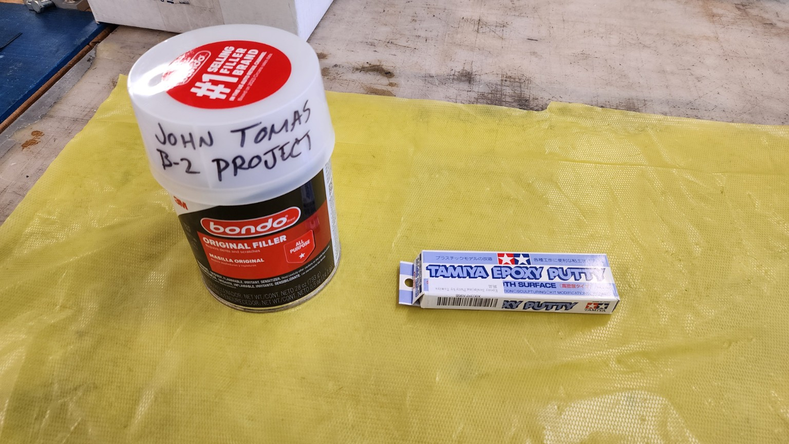
Bondo filler and Tamiya epoxy putty used to fill gaps and unwanted creases in the PLA core.
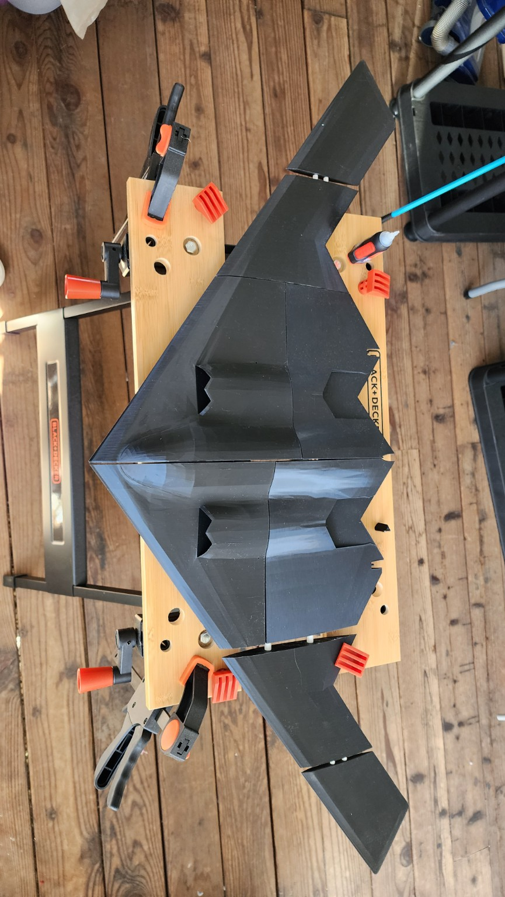
Pre-assembly fit check of the 3D printed PLA sections before glue was added.
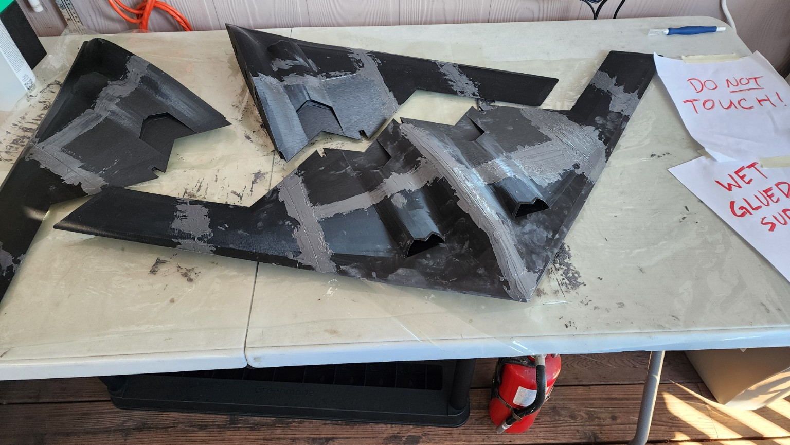
Glued PLA model after bonding with steel-reinforced adhesive and seam filling.
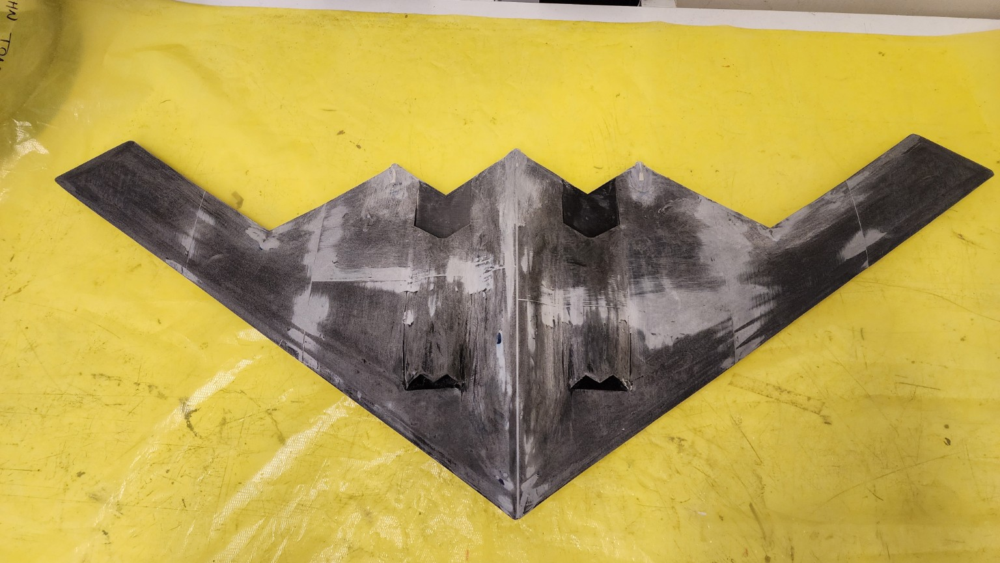
Sanded PLA core after filler work and full surface preparation.
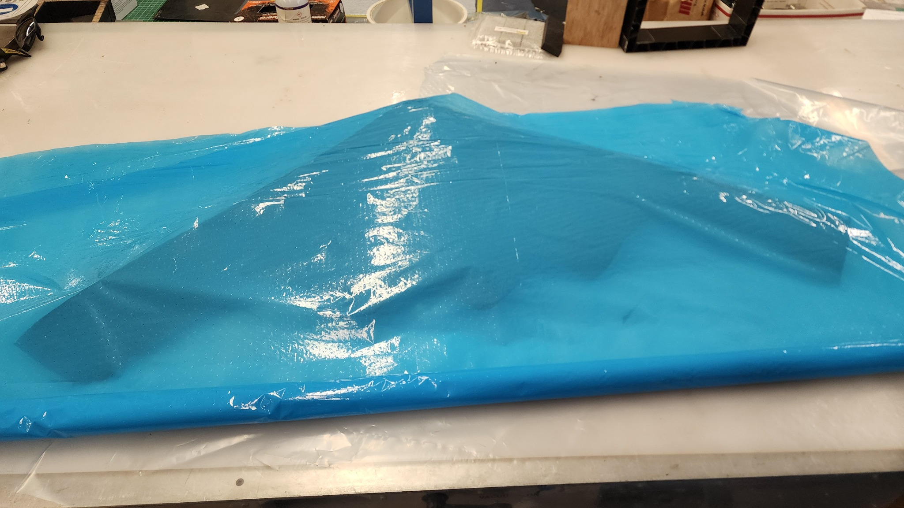
Wet composite layup under the blue breathable film.
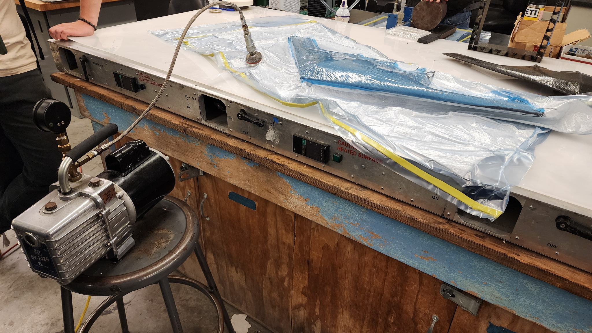
Composite material vacuum technique setup.
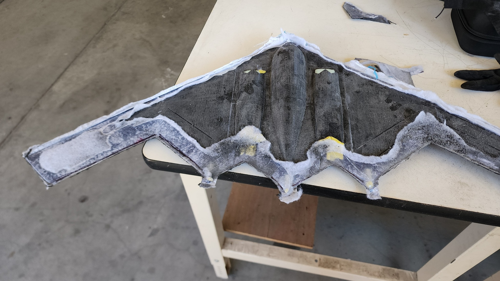
Post-bottom-layup cleanup stage.
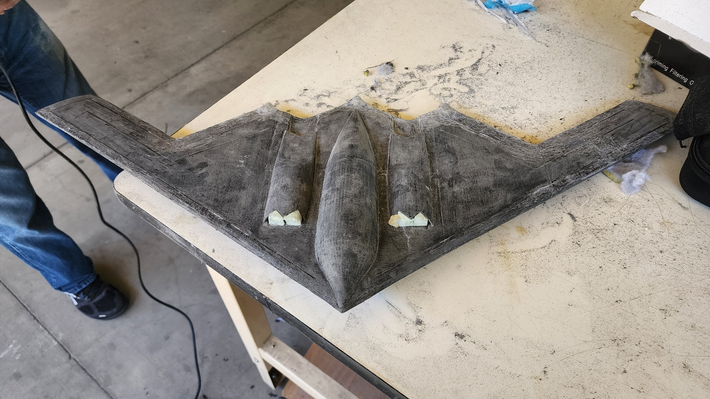
Prepared for top-side layup.
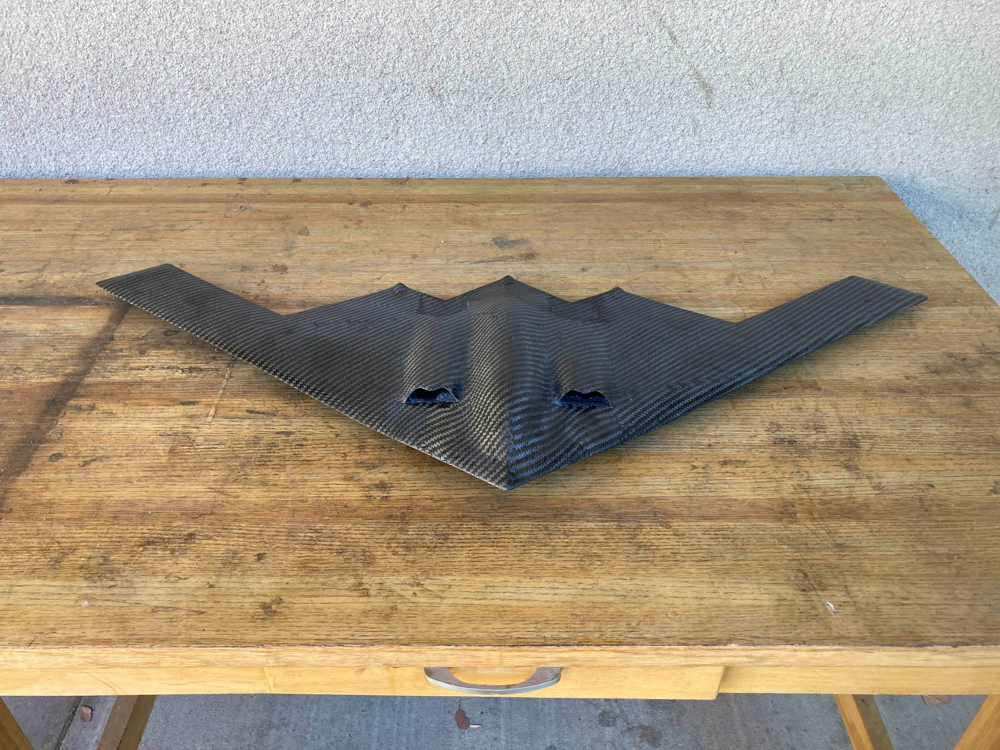
Sanded matte finish.
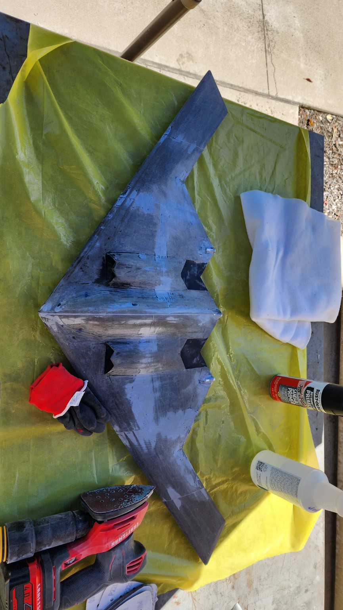
Sanding setup used during surface preparation before composite layup.
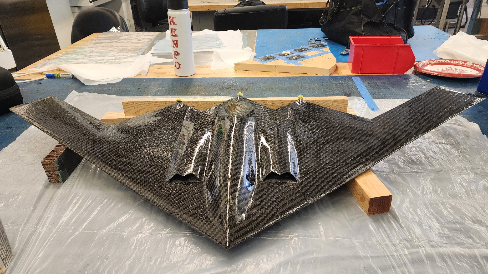
Final glossy composite finish.
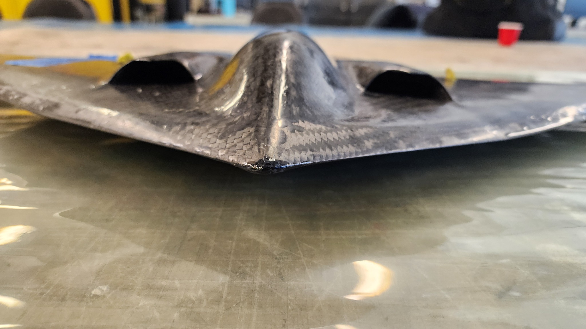
Repair close-up.
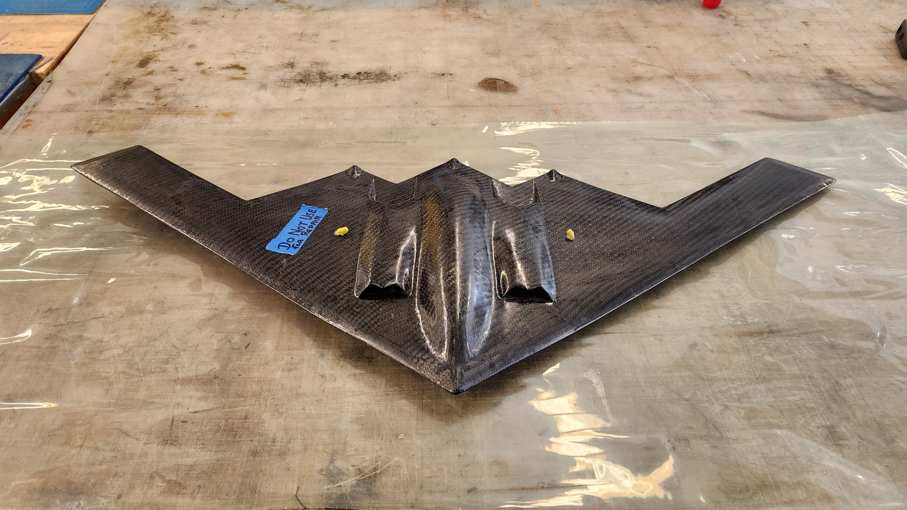
Repair full view.
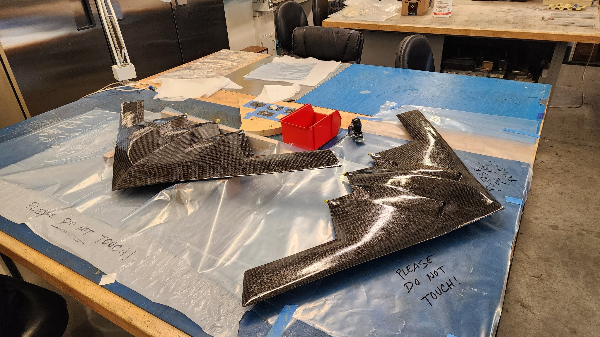
Two completed models for lab use.
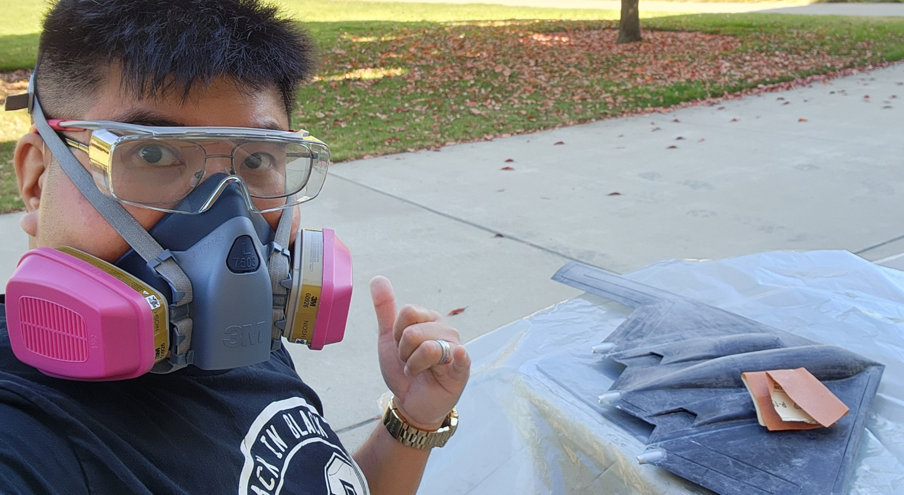
Project photo during the summer build period.